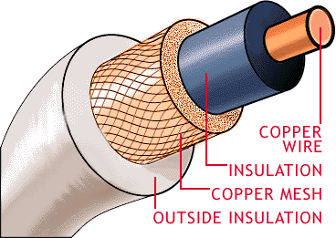
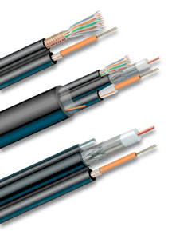
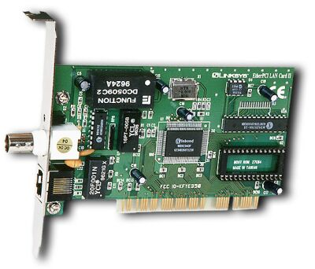
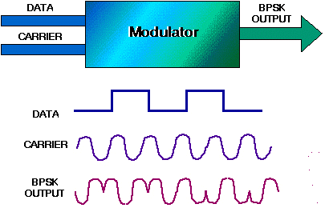
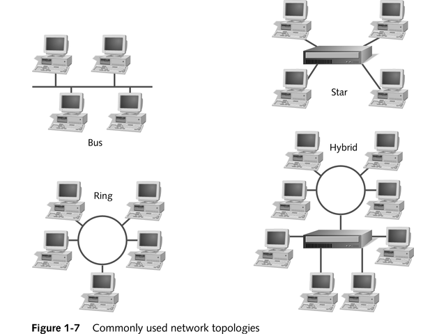
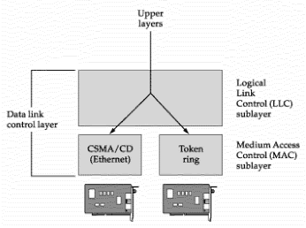
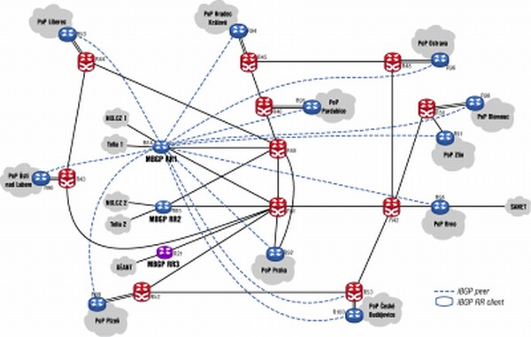
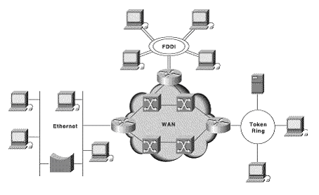
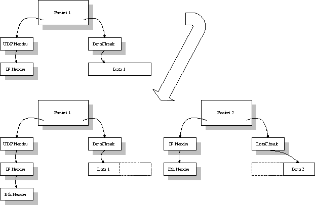
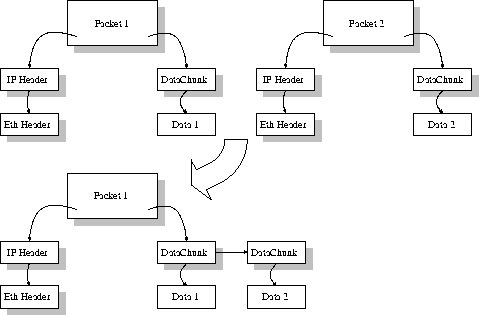

Computer Networks
Prev |
Next |
Index
ISO-OSI 7-Layer Network Architecture
This lecture introduces the ISO-OSI layered architecture of Networks. According to the ISO standards, networks have
been divided into 7 layers depending on the complexity of the fucntionality each of these layers provide. The detailed
description of each of these layers is given in the notes below. We will first list the layers as defined by the
standard in the increasing order of function complexity:
- Physical Layer
- Data Link Layer
- Network Layer
- Transport Layer
- Session Layer
- Presentation Layer
- Application Layer
This layer is the lowest layer in the OSI model. It helps in the transmission of data between two machines that are
communicating through a physical medium, which can be optical fibres,copper wire or wireless etc. The following are the
main functions of the physical layer:
- Hardware Specification: The details of the physical cables, network interface cards, wireless radios, etc are
a part of this layer.
|
Coaxial Cable |
Hybrid Cable |
Wireless Card |
Network Card |
|
 |
 |
|
 |
- Encoding and Signalling: How are the bits encoded in the medium is also decided by this layer. For example,
on the coppar wire medium, we can use differnet voltage levels for a certain time interval to represent '0' and '1'.
We may use +5mV for 1nsec to represent '1' and -5mV for 1nsec to represent '0'. All the issues of modulation is dealt
with in this layer. eg, we may use Binary phase shift keying for the representation of '1' and '0' rather than using
different volatage levels if we have to transfer in RF waves.

Binary Phase Shift Keying
- Data Transmission and Reception: The transfer of each bit of data is the responsibility of this layer. This
layer assures the transmissoin of each bit with a high probability. The transmission of the bits is not
completely reliable as their is no error correction in this layer.
- Topology and Network Design: The network design is the integral part of the physical layer. Which part of the
network is the router going to be placed, where the switches will be used, where we will put the hubs, how many machines
is each switch going to handle, what server is going to be placed where, and many such concerns are to be taken care
of by the physical layer. The variosu kinds of netopologies that we decide to use may be ring, bus, star or a hybrid of
these topologies depending on our requirements.

This layer provides reliable transmission of a packet by using the services of the physical layer which transmits bits over the medium in an unreliable fashion. This layer is concerned with :
- Framing : Breaking input data into frames (typically a few hundred bytes) and caring about the frame boundaries and the size of each frame.
- Acknowledgment : Sent by the receiving end to inform the source that the frame was received without any error.
- Sequence Numbering : To acknowledge which frame was received.
- Error Detection : The frames may be damaged, lost or duplicated leading to errors.The error control is on link to link basis.
- Retransmission : The packet is retransmitted if the source fails to receive acknowledgment.
- Flow Control : Necessary for a fast transmitter to keep pace with a slow receiver.

Data Link Layer
Its basic functions are routing and congestion control.
Routing: This deals with determining how packets will be routed (transferred) from source to destination. It can be of three types :
- Static : Routes are based on static tables that are "wired into" the network and are rarely changed.
- Dynamic : All packets of one application can follow different routes depending upon the topology of the network, the shortest path and the current network load.
- Semi-Dynamic : A route is chosen at the start of each conversation and then all the packets of the application follow the same route.

Routing
The services provided by the network can be of two types :
- Connection less service: Each packet of an application is treated as an independent entity. On each packet of the application the destination address is provided and the packet is routed.
- Connection oriented service: Here, first a connection is established and then all packets of the application follow the same route. To understand the above concept, we can also draw an analogy from the real life. Connection oriented service is modeled after the telephone system. All voice packets go on the same path after the connection is established till the connection is hung up. It acts like a tube ; the sender pushes the objects in at one end and the receiver takes them out in the same order at the other end. Connection less service is modeled after the postal system. Each letter carries the destination address and is routed independent of all the others. Here, it is possible that the letter sent first is delayed so that the second letter reaches the destination before the first letter.
Congestion Control: A router can be connected to 4-5 networks. If all the networks send packet at the same time with maximum rate possible then the router may not be able to handle all the packets and may drop some/all packets. In this context the dropping of the packets should be minimized and the source whose packet was dropped should be informed. The control of such congestion is also a function of the network layer. Other issues related with this layer are transmitting time, delays, jittering.
Internetworking: Internetworks are multiple networks that are connected in such a way that they act as one large network, connecting multiple office or department networks. Internetworks are connected by networking hardware such as routers, switches, and bridges.Internetworking is a solution born of three networking problems: isolated LANs, duplication of resources, and the lack of a centralized network management system. With connected LANs, companies no longer have to duplicate programs or resources on each network. This in turn gives way to managing the network from one central location instead of trying to manage each separate LAN. We should be able to transmit any packet from one network to any other network even if they follow different protocols or use different addressing modes.

Inter-Networking
Network Layer does not guarantee that the packet will reach its intended destination. There are no reliability
guarantees.
Its functions are :
- Multiplexing / Demultiplexing : Normally the transport layer will create distinct network connection for each transport connection required by the session layer. The transport layer may either create multiple network connections (to improve throughput) or it may multiplex several transport connections onto the same network connection (because creating and maintaining networks may be expensive). In the latter case, demultiplexing will be required at the receiving end. A point to note here is that communication is always carried out between two processes and not between two machines. This is also known as process-to-process communication.
- Fragmentation and Re-assembly : The data accepted by the transport layer from the session layer is split up into smaller units (fragmentation) if needed and then passed to the network layer. Correspondingly, the data provided by the network layer to the transport layer on the receiving side is re-assembled.
|
Fragmentation |
Reassembly |
|
 |
 |
- Types of service : The transport layer also decides the type of service that should be provided to the session layer. The service may be perfectly reliable, or may be reliable within certain tolerances or may not be reliable at all. The message may or may not be received in the order in which it was sent. The decision regarding the type of service to be provided is taken at the time when the connection is established.
- Error Control : If reliable service is provided then error detection and error recovery operations are also performed. It provides error control mechanism on end to end basis.
- Flow Control : A fast host cannot keep pace with a slow one. Hence, this is a mechanism to regulate the flow of information.
- Connection Establishment / Release : The transport layer also establishes and releases the connection across the network. This requires some sort of naming mechanism so that a process on one machine can indicate with whom it wants to communicate.
References of Images
- http://www.putergeek.com/.../ pci_combo_card_sm.jpg
- http://blue.utb.edu/libertad/clipart/pi_wireless_pc_card_b.jpg
- http://www.commscope.com/ images/hybrids.jpg hybrid cable
- http://www.cba.nau.edu/facstaff/maris-j/SavedStuff/Images/net_topo.gif
- http://www.ces.net/doc/2003/research/xl-unicast-routing.gif
- http://www.infinitygroup.com/images/internetworking.gif
- http://www.microway.com/.../ data_link_layer.gif
- http://searchnetworking.techtarget.com/WhatIs/images/coaxla.gif
- http://www.df.lth.se/~pkj/thesis_report/img13.gif
- http://www.df.lth.se/~pkj/ thesis_report/img12.gif
- http://www.ifla.org/VI/5/reports/rep3/rep3-2.gif
- http://msp.gsfc.nasa.gov/tdrss/bpsk.gif
back to top
Prev |
Next |
Index